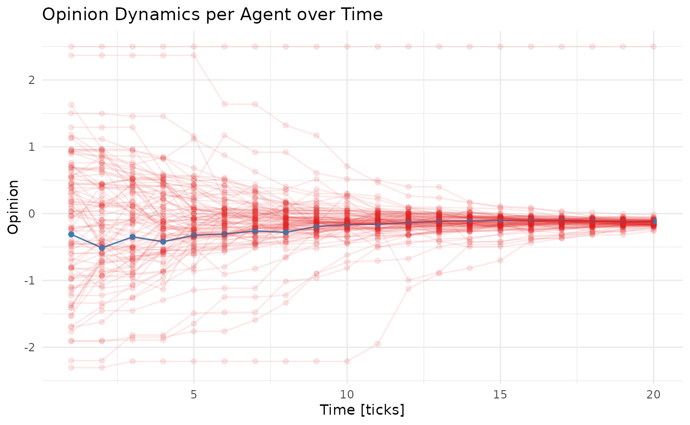

Deffuant et al.'s Bounded Confidence Model of Opinion Dynamics
Source:vignettes/boundedconfidence.Rmd
boundedconfidence.RmdRead about the Bounded Confidence Model of Opinion Dynamics in the original publication of 2000 by Deffuant, Neau, Amblard, and Weisbuch.
The version implemented here sets up 100 agents and distributes an opinion, operationalized on a normalized scale with an average (mean) of 0 and a standard deviation of 1, thus roughly ranging from -2 to +2. In each round, each agent meets with a random other agent whereby both update their opinion according to a slightly varying adaptation factor my (a random number between a lower and an upper boundary of my) if, any only if, their opinion delta is below a certain threshold.
library(tidyabm)
library(dplyr)
#>
#> Attaching package: 'dplyr'
#> The following objects are masked from 'package:stats':
#>
#> filter, lag
#> The following objects are masked from 'package:base':
#>
#> intersect, setdiff, setequal, union
library(ggplot2)Model configuration parameters are combined here:
n_agents <- 100
threshold <- 2.0
my_lower_boundary <- 0.0
my_upper_boundary <- 0.5This time, creating the agent blueprints is kind of useless. That’s because we do not give agents neither an individual opinion nor an action. We do not give them an opinion because we want to give all agents together a distribution of opinions so that the initial opinions are distributed normally. We also do not give the agents their own actions because, if specified on a per-agent level, each agent would look for another one and, hence, some would end up being in multiple meetings (because they reached out to one other agent and were reached out to by one or several other agents as well).
So instead of specifying agent blueprints, here’s the actual model (i.e., the environment) directly. Here, we add “empty” agents, distribute the initial opinions, and specify the meeting action between two random agents.
The most complicated part here are of course the meetings. For the meetings, specifically, we do the following (once per iteration/tick):
- we create
n_agents/2meetings and put them into a vector ofn_agentselements so that each meeting appears twice in this list - we distribute all agents onto these meetings so that each agent is on exactly one meeting
- for each meeting …
- we calculate the delta between the two agents’ opinions
- if the delta is larger than
thresholdwe omit this meeting - otherwise, we take a random my (between the specified lower/upper boundary) and calculate both agents’ new opinion
- finally, we iterate through the meeting results (using a quicker
iteration function named
mapout of tidyverse’s purrr package) and overwrite all the agents’ old opinions with their new opinions (note that, insidemapwe need to overwrite anything that is outside such asmewith a double arrow<<-)
For overall environment/model interpretation, we calculate pull out
the highest and lowest opinion per tick for later inspection. Also note
that the environment does not get an end point but will run
indefinitely. Hence, you have to set the max_iterations in
the iterate(...) function accordingly to when you want it
to stop:
e <- create_network_environment(seed = 13485) %>%
add_agents(create_agent(),
n = n_agents) %>%
distribute_characteristic_across_agents('opinion',
rnorm(n = n_agents,
mean = 0,
sd = 1)) %>%
add_rule('random agent meetings',
.consequence = function(me, abm) {
meetings <- sample(rep(1:(n_agents/2), 2))
meeting_results <- me %>%
convert_agents_to_tibble() %>%
bind_cols(tibble(meeting = meetings)) %>%
select(meeting, .id, opinion) %>%
group_by(meeting) %>%
summarize(agent_1 = first(.id),
agent_2 = last(.id),
opinion_1 = first(opinion),
opinion_2 = last(opinion),
.groups = 'drop') %>%
mutate(delta = abs(opinion_1 - opinion_2)) %>%
filter(delta <= threshold) %>%
mutate(my = runif(n(),
min = my_lower_boundary,
max = my_upper_boundary),
opinion_new_1 = opinion_1 + my * (opinion_2 - opinion_1),
opinion_new_2 = opinion_2 + my * (opinion_1 - opinion_2))
purrr::map(1:nrow(meeting_results),
function(meeting) {
me <<- me %>%
distribute_characteristic_across_agents(
'opinion',
meeting_results[[meeting, 'opinion_new_1']],
.id == meeting_results[[meeting, 'agent_1']],
.overwrite = TRUE,
.suppress_warnings = TRUE) %>%
distribute_characteristic_across_agents(
'opinion',
meeting_results[[meeting, 'opinion_new_2']],
.id == meeting_results[[meeting, 'agent_2']],
.overwrite = TRUE,
.suppress_warnings = TRUE)
})
return(me)
}) %>%
add_variable(min_opinion = function(me, abm) {
abm %>%
convert_agents_to_tibble() %>%
summarise(minimum = min(opinion)) %>%
pull(minimum) %>%
return()
}) %>%
add_variable(max_opinion = function(me, abm) {
abm %>%
convert_agents_to_tibble() %>%
summarise(maximum = max(opinion)) %>%
pull(maximum) %>%
return()
}) %>%
init()Finally, iteration. This is the step that takes a while. Note that we set a maximum of 20 iterations here so the iteration ticks exactly 20 times (because there is no other way for it to stop):
e <- e %>%
iterate(max_iterations = 20)
#> [1] "Tick 1 finished in 3.112 secs:"
#> [1] " min_opinion: -2.78512566739624"
#> [1] " max_opinion: 2.62032851479196"
#> [1] "Tick 2 finished in 3.218 secs:"
#> [1] " min_opinion: -2.51746077728397"
#> [1] " max_opinion: 2.62032851479196"
#> [1] "Tick 3 finished in 3.269 secs:"
#> [1] " min_opinion: -2.37934428861777"
#> [1] " max_opinion: 2.01669245352312"
#> [1] "Tick 4 finished in 3.07 secs:"
#> [1] " min_opinion: -1.55958351868582"
#> [1] " max_opinion: 2.01669245352312"
#> [1] "Tick 5 finished in 3.282 secs:"
#> [1] " min_opinion: -1.55958351868582"
#> [1] " max_opinion: 2.01669245352312"
#> [1] "Tick 6 finished in 3.343 secs:"
#> [1] " min_opinion: -1.41499639308866"
#> [1] " max_opinion: 1.89535509730667"
#> [1] "Tick 7 finished in 3.453 secs:"
#> [1] " min_opinion: -1.30345679299076"
#> [1] " max_opinion: 1.41591201735925"
#> [1] "Tick 8 finished in 3.45 secs:"
#> [1] " min_opinion: -1.09726134291104"
#> [1] " max_opinion: 0.894593571568961"
#> [1] "Tick 9 finished in 3.535 secs:"
#> [1] " min_opinion: -0.930620809004355"
#> [1] " max_opinion: 0.691073318067747"
#> [1] "Tick 10 finished in 3.384 secs:"
#> [1] " min_opinion: -0.772261421122725"
#> [1] " max_opinion: 0.671915088728044"
#> [1] "Tick 11 finished in 3.406 secs:"
#> [1] " min_opinion: -0.668620608977825"
#> [1] " max_opinion: 0.584869739320502"
#> [1] "Tick 12 finished in 3.398 secs:"
#> [1] " min_opinion: -0.553719457872648"
#> [1] " max_opinion: 0.400198399768659"
#> [1] "Tick 13 finished in 3.429 secs:"
#> [1] " min_opinion: -0.542052598604424"
#> [1] " max_opinion: 0.367722105806354"
#> [1] "Tick 14 finished in 3.426 secs:"
#> [1] " min_opinion: -0.437728305717494"
#> [1] " max_opinion: 0.364408484791451"
#> [1] "Tick 15 finished in 3.52 secs:"
#> [1] " min_opinion: -0.309114193130515"
#> [1] " max_opinion: 0.280808473087339"
#> [1] "Tick 16 finished in 3.463 secs:"
#> [1] " min_opinion: -0.295983040655522"
#> [1] " max_opinion: 0.261930793025223"
#> [1] "Tick 17 finished in 3.465 secs:"
#> [1] " min_opinion: -0.108181681069579"
#> [1] " max_opinion: 0.224279487997386"
#> [1] "Tick 18 finished in 3.41 secs:"
#> [1] " min_opinion: -0.0764829158714187"
#> [1] " max_opinion: 0.190605910749892"
#> [1] "Tick 19 finished in 3.427 secs:"
#> [1] " min_opinion: -0.042233187948907"
#> [1] " max_opinion: 0.180475814086634"
#> [1] "Tick 20 finished in 3.417 secs:"
#> [1] " min_opinion: 0.00886191691704735"
#> [1] " max_opinion: 0.16375595929756"Let’s look at the environment and also some of the agents.
e
#> # A tibble: 20 × 6
#> .tick min_opinion max_opinion .runtime .n_agents_after_tick
#> * <dbl> <dbl> <dbl> <drtn> <int>
#> 1 1 -2.79 2.62 3.112412 secs 100
#> 2 2 -2.52 2.62 3.217685 secs 100
#> 3 3 -2.38 2.02 3.268857 secs 100
#> 4 4 -1.56 2.02 3.069829 secs 100
#> 5 5 -1.56 2.02 3.282144 secs 100
#> 6 6 -1.41 1.90 3.342595 secs 100
#> 7 7 -1.30 1.42 3.453233 secs 100
#> 8 8 -1.10 0.895 3.450334 secs 100
#> 9 9 -0.931 0.691 3.534730 secs 100
#> 10 10 -0.772 0.672 3.384182 secs 100
#> 11 11 -0.669 0.585 3.406185 secs 100
#> 12 12 -0.554 0.400 3.397967 secs 100
#> 13 13 -0.542 0.368 3.429486 secs 100
#> 14 14 -0.438 0.364 3.425963 secs 100
#> 15 15 -0.309 0.281 3.520412 secs 100
#> 16 16 -0.296 0.262 3.462705 secs 100
#> 17 17 -0.108 0.224 3.465242 secs 100
#> 18 18 -0.0765 0.191 3.409827 secs 100
#> 19 19 -0.0422 0.180 3.427176 secs 100
#> 20 20 0.00886 0.164 3.416897 secs 100
#> # ℹ 1 more variable: .finished_after_tick <lgl>
#> # ABM network environment
#> * undirected, 100 agents
#> * 0 environment characteristic(s),
#> * 2 environment variable(s),
#> * 1 environment rule(s),
#> * simulating (20 tick(s) passed)
e %>%
convert_agents_to_tibble()
#> # A tibble: 100 × 4
#> .id .indegree .outdegree opinion
#> <chr> <list> <list> <dbl>
#> 1 A1 <NULL> <NULL> 0.143
#> 2 A2 <NULL> <NULL> 0.0546
#> 3 A3 <NULL> <NULL> 0.0523
#> 4 A4 <NULL> <NULL> 0.141
#> 5 A5 <NULL> <NULL> 0.142
#> 6 A6 <NULL> <NULL> 0.0697
#> 7 A7 <NULL> <NULL> 0.0460
#> 8 A8 <NULL> <NULL> 0.0145
#> 9 A9 <NULL> <NULL> 0.0835
#> 10 A10 <NULL> <NULL> 0.0957
#> # ℹ 90 more rowsFinally, let’s see how the distribution of opinions has adjusted (converged) over time. We look at the mean, minimum and maximum opinion in each tick and visualize it over time. You can see the starting point that is quite (as in: normally distributed) scattered and the subsequent homogenization of opinions.
e %>%
ggplot(aes(x = .tick,
ymin = min_opinion,
ymax = max_opinion)) +
geom_linerange() +
scale_x_continuous('Time [ticks]') +
scale_y_continuous('Distribution of Opinions [M with min/max]') +
theme_minimal() +
ggtitle('Opinion Dynamics over Time')
There is an alternative way, though. One where we iterate tick by
tick to collect each agent’s opinion at every point in time. This also
allows us to follow one particular agent over time in its dynamics of
opinion formation. For that, we start over with the modeling environment
(reset and init, again, and also resetting the
opinions to starting values) and then loop through 20 steps in each of
which we only tick the environment once and extract all agents’
information. The agent information we append (bind_rows) to
a variable/tibble that gets built with three columns, one identifying
the agent, one identifying the tick, and one with the opinion of that
agent after that tick. Finally, we can look at the tibble and, of
course, visualize it (whereby we also color one of the agents,
A100, blue, and all the others lightly red).
e <- e %>%
reset() %>%
distribute_characteristic_across_agents('opinion',
rnorm(n = n_agents,
mean = 0,
sd = 1),
.overwrite = TRUE,
.suppress_warnings = TRUE) %>%
init()
agent_opinions_over_time <- NULL
for (i in 1:20) {
e <- e %>%
tick()
agent_opinions_over_time <- agent_opinions_over_time %>%
bind_rows(e %>%
convert_agents_to_tibble() %>%
mutate(tick = i) %>%
select(agent = .id,
tick,
opinion))
}
#> [1] "Tick 1 finished in 0.065 secs:"
#> [1] " min_opinion: -2.30542578505797"
#> [1] " max_opinion: 2.49858719659045"
#> [1] "Tick 2 finished in 2.954 secs:"
#> [1] " min_opinion: -2.30542578505797"
#> [1] " max_opinion: 2.49858719659045"
#> [1] "Tick 3 finished in 3.178 secs:"
#> [1] " min_opinion: -2.30542578505797"
#> [1] " max_opinion: 2.49858719659045"
#> [1] "Tick 4 finished in 3.134 secs:"
#> [1] " min_opinion: -2.21144998932492"
#> [1] " max_opinion: 2.49858719659045"
#> [1] "Tick 5 finished in 3.233 secs:"
#> [1] " min_opinion: -2.21144998932492"
#> [1] " max_opinion: 2.49858719659045"
#> [1] "Tick 6 finished in 3.225 secs:"
#> [1] " min_opinion: -2.21144998932492"
#> [1] " max_opinion: 2.49858719659045"
#> [1] "Tick 7 finished in 3.311 secs:"
#> [1] " min_opinion: -2.21144998932492"
#> [1] " max_opinion: 2.49858719659045"
#> [1] "Tick 8 finished in 3.247 secs:"
#> [1] " min_opinion: -2.21144998932492"
#> [1] " max_opinion: 2.49858719659045"
#> [1] "Tick 9 finished in 3.331 secs:"
#> [1] " min_opinion: -2.21144998932492"
#> [1] " max_opinion: 2.49858719659045"
#> [1] "Tick 10 finished in 3.29 secs:"
#> [1] " min_opinion: -2.21144998932492"
#> [1] " max_opinion: 2.49858719659045"
#> [1] "Tick 11 finished in 3.347 secs:"
#> [1] " min_opinion: -2.21144998932492"
#> [1] " max_opinion: 2.49858719659045"
#> [1] "Tick 12 finished in 3.453 secs:"
#> [1] " min_opinion: -1.94932818719582"
#> [1] " max_opinion: 2.49858719659045"
#> [1] "Tick 13 finished in 3.338 secs:"
#> [1] " min_opinion: -1.12452784634629"
#> [1] " max_opinion: 2.49858719659045"
#> [1] "Tick 14 finished in 3.338 secs:"
#> [1] " min_opinion: -0.900451639436226"
#> [1] " max_opinion: 2.49858719659045"
#> [1] "Tick 15 finished in 3.443 secs:"
#> [1] " min_opinion: -0.816468341548787"
#> [1] " max_opinion: 2.49858719659045"
#> [1] "Tick 16 finished in 3.423 secs:"
#> [1] " min_opinion: -0.700740831736342"
#> [1] " max_opinion: 2.49858719659045"
#> [1] "Tick 17 finished in 3.543 secs:"
#> [1] " min_opinion: -0.439367597300792"
#> [1] " max_opinion: 2.49858719659045"
#> [1] "Tick 18 finished in 3.353 secs:"
#> [1] " min_opinion: -0.371866704707868"
#> [1] " max_opinion: 2.49858719659045"
#> [1] "Tick 19 finished in 3.375 secs:"
#> [1] " min_opinion: -0.323934237385286"
#> [1] " max_opinion: 2.49858719659045"
#> [1] "Tick 20 finished in 3.419 secs:"
#> [1] " min_opinion: -0.315911069402969"
#> [1] " max_opinion: 2.49858719659045"
# this is the environment after being ticked 20 times
e
#> # A tibble: 20 × 6
#> .tick min_opinion max_opinion .runtime .n_agents_after_tick
#> * <dbl> <dbl> <dbl> <drtn> <int>
#> 1 1 -2.31 2.50 0.06532407 secs 100
#> 2 2 -2.31 2.50 2.95385408 secs 100
#> 3 3 -2.31 2.50 3.17845869 secs 100
#> 4 4 -2.21 2.50 3.13385201 secs 100
#> 5 5 -2.21 2.50 3.23346663 secs 100
#> 6 6 -2.21 2.50 3.22522163 secs 100
#> 7 7 -2.21 2.50 3.31078148 secs 100
#> 8 8 -2.21 2.50 3.24687386 secs 100
#> 9 9 -2.21 2.50 3.33138490 secs 100
#> 10 10 -2.21 2.50 3.29047465 secs 100
#> 11 11 -2.21 2.50 3.34701633 secs 100
#> 12 12 -1.95 2.50 3.45270586 secs 100
#> 13 13 -1.12 2.50 3.33814240 secs 100
#> 14 14 -0.900 2.50 3.33755851 secs 100
#> 15 15 -0.816 2.50 3.44312978 secs 100
#> 16 16 -0.701 2.50 3.42324209 secs 100
#> 17 17 -0.439 2.50 3.54257655 secs 100
#> 18 18 -0.372 2.50 3.35315633 secs 100
#> 19 19 -0.324 2.50 3.37529254 secs 100
#> 20 20 -0.316 2.50 3.41905117 secs 100
#> # ℹ 1 more variable: .finished_after_tick <lgl>
#> # ABM network environment
#> * undirected, 100 agents
#> * 0 environment characteristic(s),
#> * 2 environment variable(s),
#> * 1 environment rule(s),
#> * simulating (20 tick(s) passed)
# this is our collected variable/tibble
agent_opinions_over_time
#> # A tibble: 2,000 × 3
#> agent tick opinion
#> <chr> <int> <dbl>
#> 1 A1 1 0.224
#> 2 A2 1 1.18
#> 3 A3 1 0.682
#> 4 A4 1 0.435
#> 5 A5 1 -0.0864
#> 6 A6 1 0.690
#> 7 A7 1 -0.440
#> 8 A8 1 -1.37
#> 9 A9 1 -0.189
#> 10 A10 1 0.692
#> # ℹ 1,990 more rows
# and this is the visualization
agent_opinions_over_time %>%
ggplot(aes(x = tick,
y = opinion,
color = agent == 'A100',
alpha = ifelse(agent == 'A100', 1, 1/10),
group = agent)) +
geom_point() +
geom_line() +
scale_x_continuous('Time [ticks]') +
scale_y_continuous('Opinion') +
scale_color_brewer(palette = 'Set1') +
theme_minimal() +
theme(legend.position = 'none') +
ggtitle('Opinion Dynamics per Agent over Time')
As always, we can compile relevant data for any publication we’re preparing through the ODD protocol:
e %>%
odd()
#> # A tibble: 7 × 4
#> `ODD category` Element Content `tidyABM information`
#> <chr> <chr> <chr> <chr>
#> 1 Overview Purpose and patterns "Brief… NA
#> 2 Overview Entities, state variables, and … "List … ABM network environm…
#> 3 Overview Process overview and scheduling "Provi… environment rules: .…
#> 4 Design concepts Design concepts "This … Model has not yet fi…
#> 5 Details Initialization "Speci… See the list of agen…
#> 6 Details Input data "Repor… NA
#> 7 Details Submodels "Repea… NA